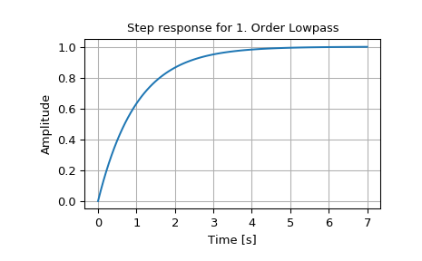

scipy.signal.step2¶
-
scipy.signal.step2(system, X0=None, T=None, N=None, **kwargs)[source]¶ Step response of continuous-time system.
This function is functionally the same as
scipy.signal.step, but it uses the functionscipy.signal.lsim2to compute the step response.- Parameters
- systeman instance of the LTI class or a tuple of array_like
describing the system. The following gives the number of elements in the tuple and the interpretation:
1 (instance of
lti)2 (num, den)
3 (zeros, poles, gain)
4 (A, B, C, D)
- X0array_like, optional
Initial state-vector (default is zero).
- Tarray_like, optional
Time points (computed if not given).
- Nint, optional
Number of time points to compute if T is not given.
- kwargsvarious types
Additional keyword arguments are passed on the function
scipy.signal.lsim2, which in turn passes them on toscipy.integrate.odeint. See the documentation forscipy.integrate.odeintfor information about these arguments.
- Returns
- T1D ndarray
Output time points.
- yout1D ndarray
Step response of system.
See also
Notes
If (num, den) is passed in for
system, coefficients for both the numerator and denominator should be specified in descending exponent order (e.g.s^2 + 3s + 5would be represented as[1, 3, 5]).New in version 0.8.0.
Examples
>>> from scipy import signal >>> import matplotlib.pyplot as plt >>> lti = signal.lti([1.0], [1.0, 1.0]) >>> t, y = signal.step2(lti) >>> plt.plot(t, y) >>> plt.xlabel('Time [s]') >>> plt.ylabel('Amplitude') >>> plt.title('Step response for 1. Order Lowpass') >>> plt.grid()
